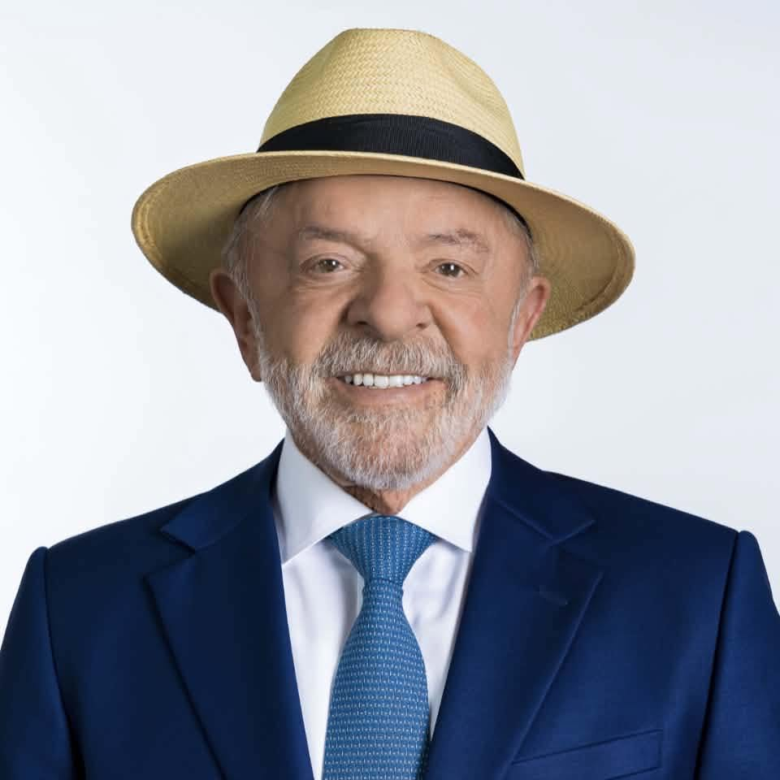

Lula da Silva
PT · 13
Clique para ver mais.
Política nas Redes · 2026
14 a 21 de agosto de 2026
Candidaturas acompanhadas
Investigar em que medida as candidaturas utilizam as mídias sociais para apresentar programas de governo em comparação à ênfase conferida aos atributos pessoais.
Postagens dos candidatos à Presidência da República no Brasil, realizadas em seus perfis oficiais no Instagram.
Candidatos que alcancem 2% ou mais de intenção de voto nas pesquisas eleitorais oficiais para o período de análise.
Análise de conteúdo orientada por categorias emergentes da literatura: apelos individuais e coletivos, com subcategorias discursivas e imagéticas. A codificação humana constitui a base para posterior treinamento de modelos de aprendizagem de máquina.
Emergentes da Análise de Conteúdo e sustentadas pela literatura.
Imagens, vídeos e conteúdos produzidos por IA são registrados.
Clique no nome dos candidatos e nas categorias para ver os resultados.
Perfil técnico, ruralidade, “homem forte”, família, patriotismo, religião, segurança, trabalho, agro e demais categorias do protocolo.
Cada ponto representa uma publicação; as categorias Personalista e Programático aparecem sobrepostas no mesmo gráfico.
Cada ponto representa uma publicação; as categorias Personalista e Programático aparecem sobrepostas no mesmo gráfico.
Imagens, vídeos e conteúdos produzidos por IA, conforme a classificação da base.